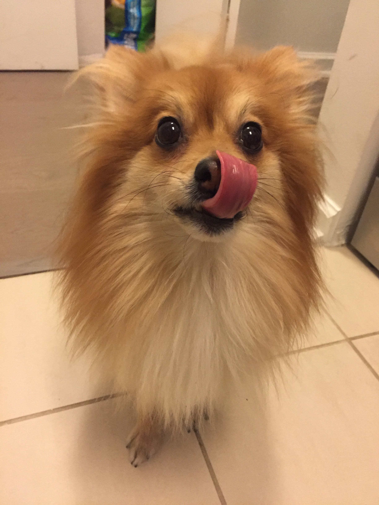

Sniffing Around Parks

We love going on walks! During the summer, there are people kayaking on the Hudson River, but unfortunately no pups are allowed. But not to worry, Daddy lets us explore the water anyway. Pom Pom likes to go lie down in the water to cool down after a long walk.
Bar Hopping
Luckily for us, there are many outdoor bars and restaurants and they are very dog friendly. We get to tag along with our parents when they go out for brunch!
The staff at the restaurants are very friendly and always give us our own water bowls! And if we are well-behaved, Mommy sneaks us some eggs from her plate.
Doing chores


We like to help out around the apartment and make up our own chores.
We are always ready to help with clean-up in the kitchen after Mommy and Daddy cook (especially Daddy, because he drops food all over the floor).
Pom enjoys helping do laundry. He likes to ride the basket over to the washing machine and afterwards, he rolls around in the clean laundry to make sure that everything is warm and dry.
Toby wants to be just like Daddy when he grows up, so he is learning to be a software developer too. Toby often checks the codes that Daddy writes to make sure that they are up to par!
Going to work

Sometimes Daddy brings us into the office. We love going because we get a lot of belly rubs!
We have our own bed under Daddy's desk and we like to snuggle up with our favourite white blanket and nap, especially after sitting through so many meetings. Working hard to earn those treats!
Traveling
We love to travel and see new places. Pom Pom is in charge of helping pack the suitcase.
As descendants of the mighty wolf, we have thick coats and love to play in the snow. Our grandparents live in Maine and we love jumping in the snowbanks when we come visit!